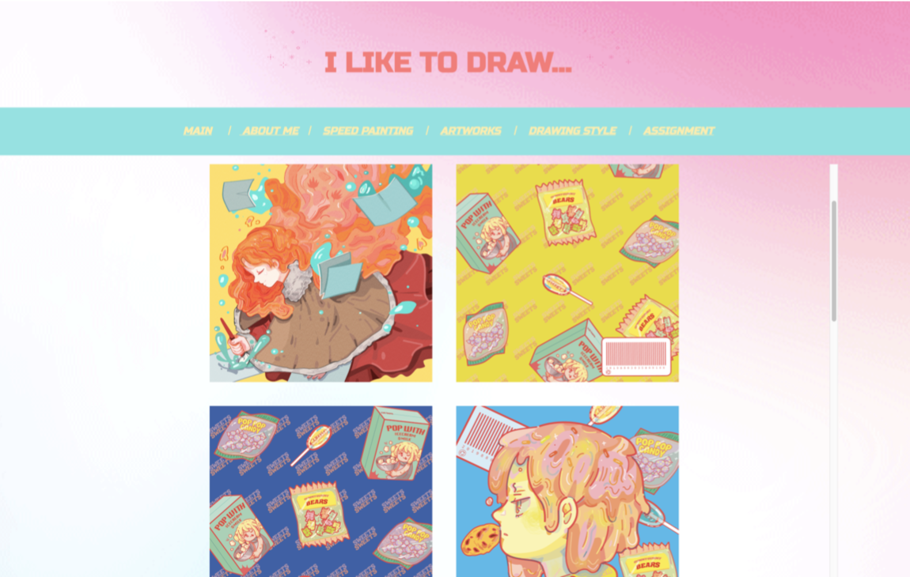
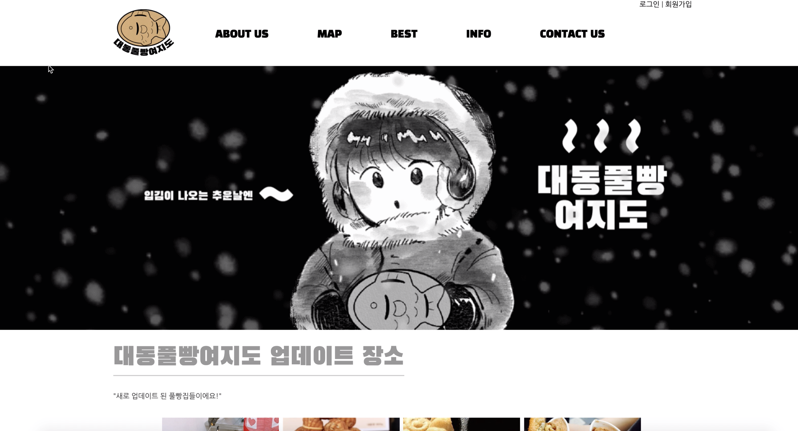

YEEUN PARK'S PORTFOLIO
YENRISO
ILLUST
3D
VISUAL
UI/UX
WEB
WEB
웹프로그래밍 1학년 1학기

I LIKE TO DRAW...
개인적으로 작업하는 스피드 페인팅과정과 개인작품들을 담고자 하였습니다.
웹프로그래밍 1학년 2학기

대동풀빵여지도
를 컨셉으로 작업하였습니다. 각종 풀빵 포장마차의 위치 및 상식을 담으려고 했습니다.
웹프로그래밍 2학년 1학기
샤이샤이
샤로수길 안내와 샤로수길에 관한 이모저모한 이야기들은 담은 페이지 입니다.